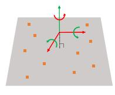
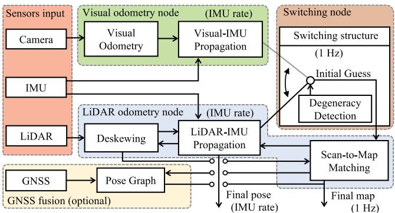
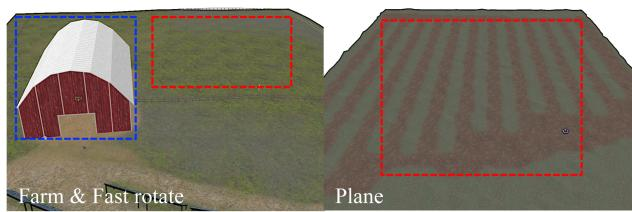
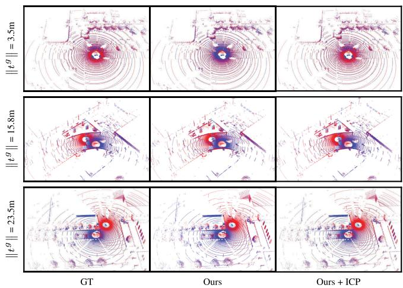
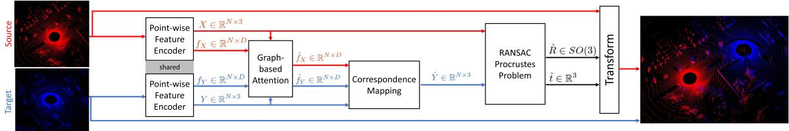

阶段 D · 激光主干 / Lesson 0091
退化环境与配准：可切换方案与低重叠对齐
上一篇讲的是「几何不够用时去翻强度」，这一篇讲的是「几何彻底不管用时，换谁来带路」🚦
🎯 主题：退化检测 · 初值切换 · 部分重叠配准 · 图注意力
👥 作者：Switch-SLAM（Lee、Komatsu、Shinozaki、Kitajima、Asama、An、Yamashita）；Partially Overlapping（Arnold、Mozaffari、Dianati）
📅 2022–2024 · Switch-SLAM: Switching-Based LiDAR-Inertial-Visual SLAM for Degenerate Environments（RA-L 2024）· Fast and Robust Registration of Partially Overlapping Point Clouds（RA-L 2022）
本节目标
读完你应该能：解释「退化」在激光和视觉里分别指什么、为什么它通常只打掉少数几个自由度；说清 Switch-SLAM 的「切换」到底切了什么（这是一个很容易被讲错的点 ）；说清「非启发式的退化检测」为什么比人工设阈值可靠；并且能解释低重叠点云配准为什么难到值得专门写一篇论文。
和前面课程怎么接
退化的定义要回链第 0076 课（NDT 与 EKF 那两条变体路线，那里第一次正面讲了 EKF-LOAM 对退化的处理），也要接第一季 0006 课（第一次把退化列进激光 SLAM 的困难清单）与 0009 课（DARPA 地下挑战赛里那些真实的退化失败）。低重叠配准这一篇则要接第一季 0014 课——那节课立下的假阳性铁律 ，正是这一篇存在的理由；而下一节 0092 课讲的回环本身 ，就站在本节这块地基上。此外固态那一篇（0090 课）面对的也是退化，只是那一课从「补一路信息」的角度切入，这一节从「换一个带路的」切入。
1. 两篇的关系：用谁，以及找回来之后怎么对上
把两篇摆在一起，它们的关系其实是一句话：
本节框架
Switch-SLAM 解决「退化的时候用谁」 ——它是完整的 SLAM 系统，同时带着激光、IMU 和相机。Partially Overlapping 解决「找回来之后怎么对齐」 ——它是一篇成对点云配准 的方法论文，本身不是里程计 ，也不是 SLAM 系统。决策决定了要不要去对齐，工具决定了能不能对齐上。
这个「工具」具体用在哪儿？答案在回环检测 和多机器人建图 上。设想两台车在地图里跑了一圈又碰面，各自攒了一大团点云，现在要把它们拼到一起——可这两团点云只有一小部分是重叠的 （两台车看的是同一处路口的不同角落）。这就是「部分重叠（partial overlap）」，也是本课第五节要展开的难点。
★ 为什么这件事这么要紧：第一季 0014 课的铁律
第一季 0014 课讲回环检测时留下过一条铁律：假阳性（把不是回环的地方认成回环）的代价极大 ——它会往位姿图里塞进一条完全错误的约束，把整张地图拧歪，而且很难被发现。必须拆成两问 ：第一问是「这两个地方像不像」（检索），第二问是「把它俩精确对上之后，到底像不像」（验证）。Partially Overlapping 这篇做的正是第二问里的对齐引擎。 它的精度直接决定了验证这一关能不能把假阳性挡在门外。预告：下一节 0092 课就是「第一问」——回环检测本身。
2. 退化到底是什么
「退化」这个词在前面的课里出现过好几次，这一节把它讲透。
先说直觉。更新一下上一节课的那个例子：在一条长走廊里，沿走廊方向的墙是平行的两片。 你沿着走廊往前走一米，激光扫到的图案几乎没有任何变化 ——还是那两片墙、还是同样的间距。可你手里那些算法要回答的问题是「我往前走了多少」，而数据里根本找不到能回答这个问题的线索。不是算法不行，是数据里没有这个信息。
从数学上看：那个方向上的信息量掉到了零
配准最终要解一个最小二乘问题，它的「信息量」可以用一个矩阵（海森矩阵，或它的近似）来表示。海森矩阵的每个特征值代表一个方向上有多少信息。 极小 ——不是「小一点」，而是接近零。这时候解出来的位移量就会被噪声主导，飘得离谱。反过来说，只要这个特征值还足够大，那个方向就是「良定」的（well-conditioned）。
第一季 0006 课把退化列进了激光 SLAM 的困难清单；第 0076 课（EKF-LOAM 那一篇）第一次正面讲了怎么处理它。本课这一篇 Switch-SLAM 对退化的描述有一个值得记住的要点：
★ 退化通常不会打掉全部六个自由度
原文说得很清楚：只要有平面特征或边缘特征存在，退化通常不会超过 3 个自由度 ——六个自由度里只有某几个变得不可观，其余的还是能估的。大片单独的平面 （比如正对一面墙）、长走廊 、隧道 。视觉这一侧的退化则是另一套原因：激进的旋转、光照剧烈变化、纹理缺失 。
这一点解释了为什么「切换」这个想法是可行的：如果退化把所有信息都打没了，换谁来带路也没用；正是因为通常只丢掉两三个自由度，用另一路传感器的信息把它补上就成了可能。

原图注（Fig. 3）： Representative examples of LiDAR odometry degenerate structures and their corresponding well-conditioned/degenerate DOFs. Green arrows denote well-conditioned DOFs. Red arrows denote degenerate DOFs. Orange patches denote planar features. Blue lines denote edge features.怎么看这张图： ① 这张图就是「退化」两个字的图解 ——请按颜色分类去看：绿色箭头是「能估的方向」，红色箭头是「估不了的方向」 ，橙色片是平面、蓝色线是边；② 逐格对照你就能看懂为什么长走廊只丢一两个自由度、而正对天花板更麻烦；③ 记住这六格，它同时也是下一节自绘图里那个「开关」的判据来源——退化检测器做的就是「数一数红箭头有几个」这件事 。
3. Switch-SLAM：切的是初值，不是整套系统
这是本节最容易被讲错的一处，我们把话说死：
★ 它切换的是「scan-to-map 的初值来源」
Switch-SLAM 不是 「激光失效了就整个换成视觉 SLAM」。恰恰相反，它是同时并行地跑着激光里程计（LO）与视觉里程计（VO）两套 ，然后由一个切换节点来决定：接下来这次 scan-to-map，用谁的传播结果当初值。 激光里程计 传播出来的位姿当初值；把初值来源扳到视觉里程计 那一侧。两边的点云数据始终都在用 ——被切换的是「从哪里开始找」，而不是「用不用激光」。
为什么「只切初值」这个设计是聪明的？因为 scan-to-map 是一个迭代求解过程，它需要一个起点 。起点好的时候，迭代几步就能收敛到正确解；起点被一个退化的方向带偏了，迭代就会朝着错的方向跑，甚至跑飞。而在退化的那几个自由度上，视觉里程计恰好还保有信息 ——它能看到纹理、能看到特征点，于是它传播出来的初值在这几个方向上是可信的。
切换的是初值，不是整套系统
长走廊：沿走廊轴几乎没有几何约束
起点
激光里程计：越走越偏
视觉里程计：稳在走廊里
退化检测器
激光里程计传播
视觉里程计传播
给 scan-to-map 的初值
这张图在画什么： 一条长走廊里两套里程计各自的传播结果，以及一个按退化检测结论来扳动的开关。怎么看这张图： ① 走廊里那两条线是同一个起点的两种传播 ：橙色那条（激光里程计）在退化的方向上越走越偏，蓝色那条（视觉里程计）大致稳住了；② 下方的两个盒子是两种初值来源 ，中间的杠杆就是那个开关——实线那一头表示当前选中激光 ，虚线那一头表示可以扳过去的那一边 ；③ 最下面的箭头指向 scan-to-map，提醒你被切换的只是「迭代从哪里开始」 ，而不是换了套系统。要记住的一句话： 切的是初值，不是整套系统——两边的点云数据始终都在用 。（图中轨迹的偏移幅度为了看得清做了夸张处理，真实系统里它可能只是慢慢偏出去。）
还有几件它做的事值得知道：
切换不是硬切，有缓冲。 它用一个状态缓冲（status buffer）来做平滑过渡，避免在退化边界上来回抖动。原文还给了一段在起止退化时的插值公式，把两路里程计的差分按一个权重混合起来。退化真的发生时，它会再做一层紧耦合。 原文的表述是：如果激光退化而视觉还没失败，就在 scan-to-map 这一步把激光残差和视觉残差联合起来优化 ；如果视觉也失败了，就去掉退化掉的那几个自由度，只靠剩下的良定方向。所以它的耦合方式是混合的。 里程计那一层，激光与视觉各自独立跑（松耦合）；只有在退化时，scan-to-map 这一步才把两边残差紧耦合在一起。这种结构的本质，是「不让失败的信息传播出去」 。

原图注（Fig. 2）： System structure of Switch-SLAM.怎么看这张图： ① 请在这张结构图里找出三个组成部分 ：视觉里程计、激光里程计、以及那个切换节点；② 最关键的一处观察是：从激光里程计到 scan-to-map 的那条线上，插着一个可以被切换节点改写的东西 ——那就是「初值」；③ 对照上一节自绘图你会发现它们是同一件事的两种画法：一个是示意，一个是工程结构。读这张图时请顺带看一眼作者的原话： 原文承认激光里程计这一边用的仍然是 LOAM 式的特征提取 （不是直接法），所以它对「特征本身就缺失」的环境是有本质局限的——这一点在第七节还会提到。

原图注（Fig. 5）： Simulated environments. The red region indicates the region of LiDAR SLAM degeneration. The blue region indicates the region of visual SLAM degeneration.怎么看这张图： ① 这张图回答一个很实际的问题——「两种退化会不会同时出现」 。图上红蓝两块区域说明答案是会 ，而且它们可能挨得很近；② 想一想：如果红蓝两块严重重叠（同一个地方激光也不行、视觉也不行），这套方法还剩什么招？这正是原文写进局限里的那一条；③ 这也是为什么它需要「退化检测器 + 状态缓冲」这样一套机制——真实场景里退化不是长期稳定的一种状态，而是进进出出的一段段区间 。
4. 「非启发式」的退化检测是什么意思
先解释「启发式」这个词在这里的贬义：启发式就是「拍脑袋定的阈值」 ——比如「只要最小特征值小于 0.3 就算退化」。这种阈值的问题是，它凭什么等于 0.3？ 换个传感器、换个场景，可能就完全不对了；而且它没有任何统计意义，你没法说它「有多可信」。
Switch-SLAM 的做法是把它交给统计检验 ：
检测什么
取激光里程计海森矩阵的最小的三个特征值 ——因为它们对应最没信息的三个方向，也就是最容易退化的地方。
怎么判
对每个特征值做卡方检验 （chi-squared test）。原文用「两自由度、95% 置信」这个条件推出一组下界，最后落到三个具体数上：0.12 / 0.27 / 0.48 。任意一个特征值低于它对应的阈值，就判定退化、准备切换。
为什么这叫「非启发」？因为这三个数不是试出来的，是从一个统计假设（观测噪声服从某个分布）推出来的 。原文强调的好处是：不需要再对阈值做调参 。这和第 0088 课 KISS-ICP 的「自适应阈值」是同一种审美——能让数据自己告诉你阈值该是多少，就别手工去拍。
检测效果：原文给出的精度是 0.96 、召回是 0.99 。作为对照，两个当时最好的方法分别是 0.91／0.91 与 0.96／0.96。召回 0.99 意味着几乎不漏 ——这在退化检测里是关键，因为漏检一次（该切没切）就会让整段轨迹被污染。
一个诚实的附注
激光这一侧的检测是「非启发式」的，但原文也承认：视觉那一侧的失败检测（特征数够不够、偏置是否异常、位姿是否跳变）用的仍然是经验阈值。 所以严格说，这套系统只有半边做到了「免调参」。
互动判断
Switch-SLAM 检测到激光里程计退化之后，它切换到的东西是——
把初值来源扳到视觉
把整套系统换成视觉
把地图表示整体换掉
5. Partially Overlapping：低重叠配准难在哪
接下来换到第二篇。它要解决的问题听起来很朴素，但做起来极难。
场景是这样的： 在协同感知或多机器人 SLAM 里，两帧点云常常来自不同的车、相距很远 ——原文说相对平移可以大到 30 米 。这时候两台车看到的重叠部分很小，可能只是同一个路口的一角。
而传统的 ICP 类方法有个隐含前提：两片点云大部分是重叠的，而且你已经有一个不错的初值 。低重叠场景把这两个前提同时打破了。
★ 原文对「低重叠时 ICP 会怎样」的论述
原文的说法是：随着两片点云之间相对平移的增大，可以被识别出来的对应关系会越来越少。 0.67 ；可一旦把范围放宽到「重叠率大于 0」——也就是承认存在极低重叠的情况——召回就掉到 0.07 ，并且旋转误差高达 74.84° ，等于完全失败。换句话说：重叠率一旦低下去，ICP 基本就不可用了。 不是「精度差一点」，是「根本对不上」。
为什么对不上？因为配准的核心是「找到对应点对」。重叠部分本来就少，再加上点云是稀疏的，同一处物理表面两次扫描几乎不可能打中同一个点——能对应的点少得可怜，而外点（只在一张图里出现的点）占了大多数 。在这种「内点远少于外点」的局面里，任何靠「平均所有对应关系」的方法都会把答案往错的方向拉。
低重叠配准：大半的点找不到对应
点云 A：完整的十字
红圈里没有对应，是外点
点云 B：只有 60% 的十字
只看到一部分，其余是空的
细虚线是能对上的点对；红圈是只在一张点云里出现的部分
这张图在画什么： 两片只重叠了一部分的点云，以及它们之间到底有多少对能对上的点。怎么看这张图： ① 左边是 A 看到的完整十字（蓝色），右边是 B 看到的同一个十字——但只覆盖了大约 60% （黄色）；② 中间那几条细虚线是能对上号的点对 ，注意它们全都落在重叠的那一小块里 ；③ 红圈圈住的是 A 里有、B 里没有的那部分（十字的右下角，以及两台车各自看到的不同杂物）——这些点在配准里都是外点，找不到任何对应 。要记住的一句话： 重叠率低的时候，大半的点都找不到对应 ——这就是为什么这件事难到值得专门做一篇论文。原文的实测更残酷：重叠率放宽到「大于 0」时，传统 ICP 的召回只剩 0.07 。

原图注（Fig. 1）： Qualitative results of the proposed method. Each row represents a different sample from the CODD test set and the vertical label indicates the relative translation between point clouds in meters, where $t^g$ indicates the ground-truth relative translation vector.怎么看这张图： ① 逐行看下去，每一行的两片点云都只重叠一小部分 ——这正是「部分重叠」的定义；② 请留意纵向标注的那个数值：它是两片点云之间的相对平移，也就是两台车离得有多远 ，原文说最大能到 30 米；③ 每一行的点云颜色不同，代表它们来自不同的观测；你要盯的是「算法估出来的相对位姿」和「真值」差多少 ，而不是点云本身好不好看。
6. 它怎么做到的：学习特征 + 图注意力 + RANSAC
这里先做一处纠正 ，因为这个方法很容易被猜错：
★ 它用的不是 GNC，也不是 TEASER
面对「外点占大多数」的局面，有一类做法是渐进非凸性（GNC） 或截断最小二乘（TEASER） ——用很猛的鲁棒核或截断策略去把外点压掉。但这一篇走的不是那条路 。学习出来的点级特征 + 图注意力网络 + RANSAC 。而 GNC 与 TEASER 在这篇论文里只是作为对比基线出现的 ，不是它的方法。请按这个记。
它的流程一共四步，对应原文那张流水线图：
① 编码：把点变成「有含义的特征」
用一个点级特征编码器（PointNet++ 那一族的 SA 加 FP 结构）来处理任意数量的输入点，最后稳定输出 512 个关键点 与每个关键点 128 维 的特征向量。这一步把「一个三维坐标」变成「一个能表达局部形状的向量」。
② 精修：用图注意力看上下文
把关键点当成图的节点，用 k 近邻（原文 k = 32）连边，然后做自注意力 （在同一片点云内部）与跨注意力 （在两片点云之间）。原文的说法是：这样能利用几何上下文提高低重叠下对应的质量。
③ 找对应
把两片点云的特征做一个相似度矩阵，按行取最大，就得到一组候选的对应关系。这一步出来的对应里，一定混着大量错误。
④ RANSAC 定案
用 RANSAC 从这堆带噪的对应里找出一个一致集 ：每次随机取最少的 3 对点算出一个变换，数一数有多少对落在阈值内（原文的内点阈值是 0.5 米 ），重复多轮取一致集最大的那个。最终的旋转与平移由这个一致集用闭式解（正交 Procrustes，用 SVD）算出来。
这里有两点值得特别说明：
它的鲁棒性来自「样本共识」，不是来自鲁棒核。 RANSAC 的逻辑是：如果正确的对应是少数，那就随机抽一小撮、看谁支持的人多 ——只要抽中一撮全是内点，就能一次算对。这和外点占多数时「用鲁棒核慢慢往下压」是完全不同的思路。它是学习式的，需要训练。 训练的目标是让「真值对应」的匹配概率尽可能高、其它对应的概率尽可能低（原文用一个对比式的损失函数来写）。这是它性能好的来源，同时也是它局限的来源——下一节会讲。

原图注（Fig. 2）： Pipeline and data flow of the proposed point cloud registration method.怎么看这张图： ① 请顺着数据流一路读过去，对着上面那四步数一遍：编码 → 图注意力精修 → 求对应 → RANSAC ；② 注意图里有两片点云从左右两侧同时进入 ——这正是「成对配准」这个定位的直接体现，它不同于里程计那种「当前帧对地图」的结构；③ 请在图里找一找有没有「鲁棒核」「截断」这一类字眼，没有 ——它的鲁棒性是在最后那一步用样本共识达成的。
互动判断
面对「内点远远少于外点」的两片部分重叠点云，这一篇靠什么把正确的位姿找出来？
学习特征再做图注意力
渐进非凸再截断最小二乘
手工特征再配距离阈值
7. 数字、短板与它在回环链上的位置
先给两篇各一张数字小表。
Switch-SLAM 的数字
· 数据集：仿真的 Fast Rotate／Plane／Farm 三段，加真实的 Handheld／Multi Floor／Long Corridor／ANYmal 1–4 等段，其中部分序列人为把视场限制到 180° 来制造退化。此时纯激光就够了，切换没有额外收益 ）。0.96 、召回 0.99 ，且不需要调阈值。
Partially Overlapping 的数字
· KITTI：本文 26.1 cm、0.41 秒；本文加 ICP 精炼 8.2 cm、3.68 秒，比最快的基线还快 5 倍以上 。0.94 、耗时 320 毫秒；本文加 ICP 召回 0.97 、1.28 秒，比 DGR／FCGF 快 35 倍 ；在重叠率大于 0.4 的区间里，平均平移误差 0.22 m ，优于全部基线。3 Hz 实时。
两篇的短板也逐条列出来，都照原文写：
篇
原文承认短板
Switch-SLAM ① 激光里程计仍然用 LOAM 式的特征提取 ，对「特征本身就缺失」的环境有本质局限；② 只切换初值 ，重度退化时还是要靠紧耦合那一步兜底；③ 实验里没有启用 GNSS 与回环 （作者说这是为了单独考察里程计部分）；④ 视觉那一侧的失败检测仍用经验阈值
Partially Overlapping ① 它是学习式 的，需要训练数据，而且依赖 CARLA 合成的 CODD 数据集——真实分布的偏移是个隐患 ；② 不加 ICP 精炼时，KITTI 上的平均平移误差略高于 DGR ；③ 编码器的超参是针对室外驾驶场景调出来的，换到室内要重新调
★ 把两篇放回整条回环链上
最后把本节和整个第四季的后半段串起来。回环这件事，完整地看是三步：
回环的三步：本节站在第 ② 步
① 找候选
下一节 0092 讲
② 配准对齐
本节：低重叠配准
③ 图优化
把回环因子加进图
假阳性（找错了回环）的代价极大 —— 第一季 0014 课的铁律
这张图在画什么： 回环检测这件事被拆成三步之后，本节这一篇站在哪一格。怎么看这张图： ① 第 ① 步「找候选」是检索问题——下一节 0092 课讲的就是它 ；② 第 ② 步「配准对齐」是本节 Partially Overlapping 做的事——把两片可能只重叠一点点的点云精确对上，并顺便判断「到底像不像」 ；③ 第 ③ 步「图优化」是把这对约束当成一条边加进位姿图，也就是第二季 0020／0021 课讲过的因子图与求解。要记住的一句话： 第一季 0014 课那条假阳性铁律之所以能守住，靠的正是第 ② 步——检索负责「像」，对齐负责「真的像」 。
★ 我们的判断（注意：这是判断，不是原文自评）
请把下面这段当作读者视角
Switch-SLAM 最有价值的地方，不是「用了视觉」，而是它的那套判断。 「非启发式的退化检测」这一件事——从统计假设推出阈值、把检测做到 0.99 的召回、并且明确宣称不需要调参——比「多加一路传感器」要难得多，也可复用得多。而且它对「切换」这个动作的克制值得学 ：只切初值，不切系统；只有在退化真正发生时，才把两路残差紧耦合起来。这是一种「尽量不破坏已经对的东西」的工程直觉。激光那一侧用的还是 LOAM 式的特征提取。 这意味着它只能应对「特征被削弱」的退化，而不能应对「特征压根不存在」的退化。如果换成前面几课那种直接法（FAST-LIO2、KISS-ICP 这一族）作为激光侧，它的适用面应该会更宽——但这只是我的推测，原文没有做这个实验。 Partially Overlapping 则是一篇定位非常清楚的工具论文。 它不解决「该不该对齐」（那是回环检测的事），只解决「给我两片低重叠点云，怎么又快又准地对上」。它的 35 倍加速和 0.94 召回都是实打实的，而且在重叠率大于 0.4 的区间里做到了优于所有基线——这个区间恰好就是实际回环验证最常遇到的区间。它的最大隐患是训练数据的来源 ：整个训练依赖 CARLA 合成的 CODD 数据集。合成数据与真实点云在噪声特性、密度分布上总有差距，这一点原文自己也承认了。「低重叠能不能上真车」，取决于这个域差距有多大。 一句话总结本节： Switch-SLAM 决定「退化时听谁的」，Partially Overlapping 决定「两片只重叠一点点的点云能不能被信」。一个管决策，一个管证据。
课后练习
请解释「退化」是什么意思，并说明为什么原文强调「退化通常不超过 3 个自由度」这件事对 Switch-SLAM 的可行性很关键。
展开查看答案
退化是什么： 在某些环境里，机器人在某个方向上的运动不会让传感器数据产生可辨认的变化 ，于是那个方向的运动量估不出来。用最小二乘的语言说，就是信息矩阵（海森矩阵）在那个方向上的特征值接近零——那个方向是「不可观」的。
典型例子： 长走廊里，沿走廊方向的墙是平行的两片。你往前走一米，看到的图案几乎没变，所以「走了多少」这件事没有线索。其它常见的退化结构还有大片单独的平面、隧道；视觉侧的退化则是激进旋转、光照剧变、纹理缺失。
为什么「不超过 3 个自由度」很关键： 六自由度的位姿里，如果一次退化就把六个方向全部打掉，那么任何「换一路传感器来补」的想法都没有意义——因为没有哪个方向还剩信息可以被利用。而原文说得很清楚：只要有平面特征或边缘特征存在，退化通常不会超过 3 个自由度 ，也就是六个方向里只丢掉两三个，其余的还是良定的。
正因为只丢掉一部分，另外一路传感器（比如视觉）在那几个被丢掉的方向上恰好保有信息 ，Switch-SLAM 才有活干——它只需要把初值在这几个方向上换成可信的来源，其余方向继续用激光。如果反过来，退化是全方位的，那么「切换初值」也就无从谈起了。
Switch-SLAM 的「切换」到底切的是什么？请把它不是 什么也说清楚，并解释为什么这个设计比「换一整套系统」更稳妥。
展开查看答案
它切的是「scan-to-map 的初值来源」。 原文的结构是：激光里程计（LO）与视觉里程计（VO）并行地跑着 ，由一个切换节点决定这一次的 scan-to-map 用谁的传播结果当初值。位姿正常时用激光的传播，检测到激光退化时扳到视觉的传播。两边的点云数据始终都在用。
它不是： ① 不是「激光失效了就整个换成视觉 SLAM」——激光那一侧没有被关掉，退化时它还会在 scan-to-map 里把自己的残差交出来联合优化；② 不是换地图表示——地图仍然是 LOAM 式的平面与边缘特征地图；③ 也不是单一的紧耦合融合系统——里程计那一层两边各自独立跑（松耦合），只有在退化发生时，scan-to-map 这一步才把两边残差紧耦合在一起。
为什么更稳妥： ① scan-to-map 是一个迭代求解 过程，它需要一个起点。起点好的时候几步就收敛；起点被退化方向带偏了就会跑飞。切换的正是这个「起点」，改动小、见效直接。② 如果整个换成另一套系统，就会丢掉激光在那些还良定的方向上 的信息——而那部分信息本来是好用的。③ 只切初值意味着失败的信息不会被传播出去 ：退化的方向由视觉来带路，良定的方向还是激光说了算，两边各用所长。④ 它还配了状态缓冲做平滑过渡，避免在退化边界上来回抖动。原文还写了一段起止退化时把两路差分按权重混合的插值公式，正是为了避免硬切。
低重叠点云配准为什么这么难？请用「对应关系的数量」这个角度解释，并说明本篇是用什么办法绕过这个困难的。
展开查看答案
难点在于「内点远远少于外点」。 配准的核心是找到对应点对。在部分重叠的场景里（原文说两片点云的相对平移可达 30 米），两片点云只有一小块是重叠的，剩下的部分各自看到的是不同的东西——在重叠区之外，一个点根本找不到对应 。再叠加激光点云的稀疏性，同一处物理表面两次扫描几乎不可能打中同一个点，于是真正能对上的点少得可怜。
原文的实测把这件事说得很直白：ICP 在重叠率大于 0.6 时召回还有 0.67；一旦放宽到「重叠率大于 0」，召回掉到 0.07 ，旋转误差高达 74.84° ——等于完全失败。原因是这类方法隐含地假设「大部分点都是重叠的、而且初值不差」，低重叠把两个前提同时打破了。
本篇的办法：学习特征 + 图注意力 + RANSAC。 ① 先用点级特征编码器把点变成 512 个关键点、每个 128 维的特征（利用局部形状，而不是单纯的三维坐标）；② 用图注意力（k 近邻 32）在同一点云内部做自注意力、在两片点云之间做跨注意力，用几何上下文把模糊的对应变明确 ；③ 求相似度得到候选对应；④ 最后用 RANSAC 靠样本共识从这堆带噪对应里挑出一致集，内点阈值 0.5 米、最少 3 对点，再由一致集闭式算出旋转与平移。
要注意的是：它的鲁棒性来自「样本共识」，不是来自鲁棒核。 GNC 与 TEASER 在这篇论文里只是作为基线出现的。RANSAC 的逻辑是：既然正确的对应是少数，那就随机抽一小撮、看谁支持的人多——只要抽中一撮全是内点，就能一次算对。这和「用鲁棒核慢慢往下压外点」是完全不同的两条路。
本节两篇共同的现实约束是什么？请分别说出它们的短板，并说明这些短板各自会怎样限制它们的适用范围。
展开查看答案
Switch-SLAM 的约束是「它的激光那一侧本身不够强」。 原文承认激光里程计用的仍然是 LOAM 式的特征提取 。这意味着它只能应对「特征被削弱」的退化（长走廊、开阔地），而不能应对「特征压根不存在」的退化——因为特征法是靠提取角点、平面点吃饭的，环境里没有这些，它自己就先失效了。所以它的适用范围是「结构还在、只是不够」的退化环境 ，而不是「完全无结构」的环境。此外它还有三条自认的边界：只切初值（重度退化仍需紧耦合兜底）、实验里没有启用 GNSS 与回环（所以论文展示的能力只覆盖里程计部分）、视觉侧的失败检测仍在用经验阈值。
Partially Overlapping 的约束是「它是学习式的」。 它需要训练数据，而且训练依赖的是 CARLA 合成的 CODD 数据集。合成点云和真实点云在噪声特性、点密度分布、遮挡模式上总会有差距，所以「在合成数据上学到的能力，能不能迁移到真实传感器上」是一个真实的隐患 ——原文自己把这一条写进了局限。它还有两条次要的边界：不加 ICP 精炼时，KITTI 上的平均平移误差略高于 DGR；编码器的超参是针对室外驾驶场景调的，换到室内要重新调。
两条约束的性质不一样： Switch-SLAM 的限制来自方法本身的假设 （特征法对无特征环境无能为力），属于「换个前提就会失效」；Partially Overlapping 的限制来自训练数据的来源 ，属于「换个域就可能掉性能」。读论文时把这两种性质的限制分开看，会更容易判断一篇方法能不能搬到你的场景里。